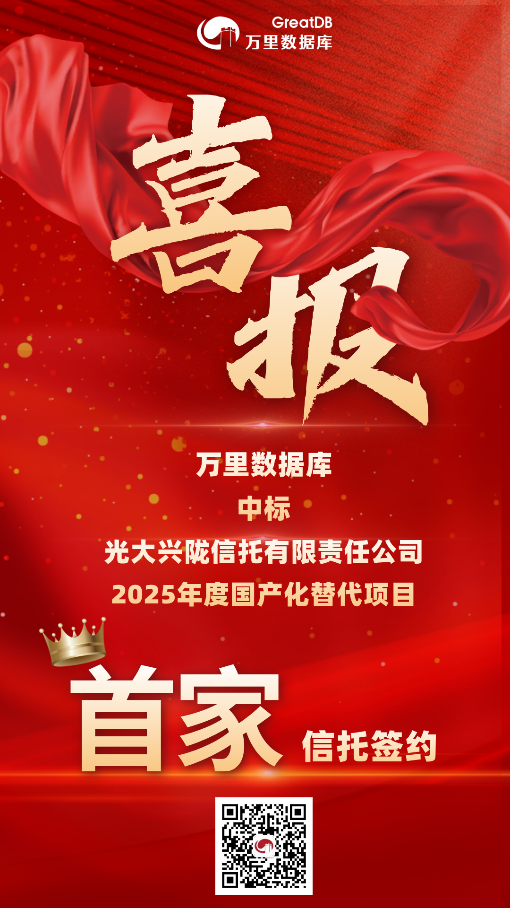

喜报 | 金融双中标！万里数据库中标光大兴陇信托、宁波通商银行国产数据库项目
近日，万里数据库在金融行业国产化领域连传捷报，成功中标光大兴陇信托与宁波通商银行的国产化数据库项目。此次“双中标”不仅体现了市场对万里数据库产品技术与服务能力的高度认可，更彰显了其在推动金融核心系统底层基础设施自主创新中的坚实步伐。
1 信托首单破局 开拓全新领域
在光大兴陇信托有限责任公司2025年度国产化替代项目中，万里数据库成功中标其基础软硬件采购的集中式数据库部分。
该项目是万里数据库在信托领域的首个落地项目，实现了金融细分领域的全新突破，为后续拓展同类市场奠定了坚实基础。中标后，万里数据库将支撑光大兴陇信托重要业务系统的国产化替代与升级，以稳定可靠的数据库能力保障其业务连续性及数据安全。

2 蝉联城商行 实现独家合作
在宁波通商银行2025-2027年国产化数据库软件框架协议采购项目中，万里数据库作为集中式数据库的唯一入围厂商，与该行达成了为期3年的框架合作。
这也是万里数据库成功中标的第三家城商行客户，继张家口银行、河北银行之后，再次获得区域性银行认可。此次独家入围，充分体现了客户对万里数据库产品性能与服务能力的高度信任，也进一步拓展了万里数据库在城商行体系内的国产生态影响力。
3 深耕金融市场 夯实信创底座
连续两项中标背后，是万里数据库长期聚焦金融级场景、持续打磨产品与服务的能力印证。
作为国内领先的数据库产品与解决方案提供商，万里数据库始终坚持高性能、高可用、高安全的技术路径，其集中式数据库产品具备强劲的OLTP处理能力，全面适配主流国产基础软硬件，能够为金融机构提供平滑迁移与稳定运行的替代方案，助力核心系统实现安全可控。
更安全、更稳定、更高效
未来，万里数据库将继续秉持技术初心，以更安全、更稳定、更高效的数据库产品与专业服务体系，助力更多金融机构夯实数字化转型底座，护航中国金融行业在核心系统自主创新的道路上稳健前行。